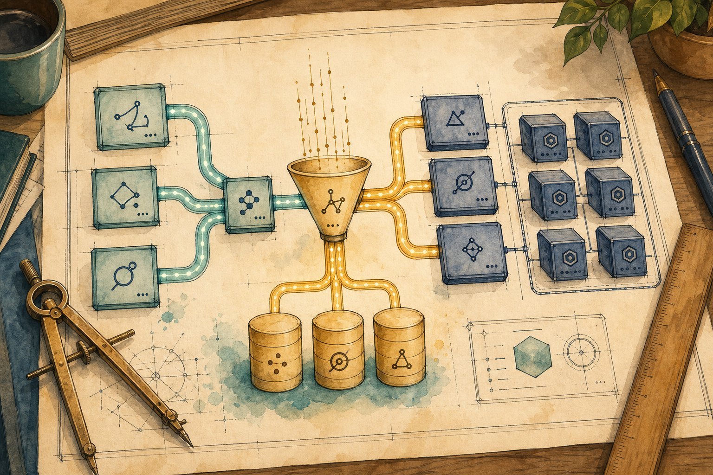

ML system design walkthroughs
Three end-to-end designs interviewers love: video recommendations, fraud detection, and RAG at scale. Learn the framework — requirements → scale → data → model → serve → monitor — then steal the diagrams for your interviews.

Figure SD.1 — Every ML design is the same skeleton: understand, retrieve/generate, rank/decide, serve, monitor. Details differ; the skeleton doesn’t.
The 6-step framework (use it every time)
1. Clarify requirements + scale numbers (QPS, latency, users). 2. API sketch. 3. Data: sources, labels, features. 4. Model: baseline → strong, train/eval. 5. Serve: online/batch, cache, fallbacks. 6. Monitor: drift, slices, business KPI. Say trade-offs aloud at every step.
Design 1 · Video recommendations (YouTube-style)
| Decision | Choice | Why |
|---|---|---|
| Candidate gen | Two-tower embeddings + ANN index | Sub-50 ms retrieval over 100M items; precomputed video towers |
| Ranking objective | Weighted watch-time + satisfaction | Clicks alone breed clickbait; add surveys, hides, diversity penalties |
| Cold start | Popularity + exploration slots | New users/videos need priors; ε-greedy / bandits for exploration |
| Feedback loops | Log exposure; random holdouts | Without them the model narrows taste and can’t learn what it never shows |
Design 2 · Real-time fraud detection
| Decision | Choice | Why |
|---|---|---|
| Latency | P99 < 200 ms end-to-end | Checkout can’t wait; precompute velocity features in a stream store |
| Imbalance | PR-AUC, class weights, threshold by cost | 0.1% fraud: accuracy is a joke; tune $ loss, not F1 alone |
| Adversarial drift | Weekly retrain + challenger model | Fraudsters adapt (concept drift); shadow-test the challenger continuously |
| Labels | Chargebacks + analyst review queue | Delayed, noisy labels; never train on your own blocks as “truth” without review |
Design 3 · RAG chatbot at scale
| Decision | Choice | Why |
|---|---|---|
| Freshness | CDC/webhook re-index, minutes | Stale chunks = confident wrong answers; show “as of” dates |
| Cost | Cache embeddings + answers; small reranker, big generator only when needed | Repeated questions shouldn’t re-burn GPU; route by difficulty |
| Safety | Tenant filters, PII scrub, injection evals | One tenant’s docs must never leak into another’s answer |
| Eval | Recall@k + faithfulness + golden set in CI | Index/prompt/model changes all gate on the same suite (Ch 42–43) |
Practice: say it like an interview
D1. “Design video recommendations for 10M users.” Give your 2-minute opening (requirements + scale + funnel).
“Home feed, 10M DAU, ~100M videos, p99 < 300 ms, optimise watch-time + satisfaction. Funnel: two-tower ANN candidate gen (100M→1k), deep ranker (1k→100), rerank for freshness/diversity/safety (→20). Log exposure for debias; bandits for cold start; offline PR/rank evals + online A/B on watch time and hides.” Then drill into whichever the interviewer probes.
D2. The recsys PM says “just optimise clicks.” Your 60-second pushback?
Clicks reward clickbait and outrage — Goodhart’s law. Counter: multi-objective (watch time, completes, likes/hides, survey satisfaction, diversity caps), long-term holdouts measuring retention, and quality classifiers as ranker features. Short-term clicks up, long-term users gone.
D3. Fraud model PR-AUC is flat but chargebacks doubled. Debug in order.
(1) Label lag: recent fraud not yet charged back — eval window too fresh. (2) Slice it: new merchant category/geo/device the model never saw. (3) Threshold drift: score distribution shifted, fixed threshold now wrong. (4) Adversarial shift: same inputs, new tactics (concept drift) — check challenger + rule-hit rates. Fix slice, recalibrate, retrain.
D4. Fraud must decide in <200 ms p99. Where does the budget go?
Feature fetch ~50 ms (precomputed stream store, Redis), rules ~5 ms, GBM inference ~20 ms, network/serialisation rest. Keep a fast path: rules-only decision if the feature store times out (fail open with step-up auth, never fail blind). Load-test at 3× peak; autoscale on queue depth.
D5. RAG chatbot costs $50k/month at 40 req/s. Cut it 5× without hurting quality.
(1) Cache: exact-question + semantic cache for head queries (often 30–50% of traffic). (2) Retrieve less, rerank smart: smaller top-k, cheap reranker, big generator only for hard/confident-low cases (cascade). (3) Trim prompts: shorter chunks, fewer shots. (4) Quantised serving (vLLM + AWQ), scale-to-zero. Measure faithfulness on the golden set after each cut.
D6. Two tenants’ docs got mixed in one RAG answer. Post-mortem: root cause + 3 fixes.
Root cause: retrieval filtered by tenant too late (or not at all) — generator saw cross-tenant chunks. Fixes: (1) hard tenant filter at index/query time + separate namespaces; (2) eval slice with adversarial cross-tenant probes in CI; (3) output audit logging + PII scrubber, incident runbook, customer notice. Privacy is architectural, not a prompt.
Short notes
Framework: requirements → scale → API → data → model → serve → monitor. Recsys = funnel (ANN → rank → rerank) + exposure logging. Fraud = rules + GBM under 200 ms + review queue + weekly retrain. RAG = fresh index + hybrid retrieve + cascade + cache + tenant isolation. Always name the trade-off and the metric that gates it.